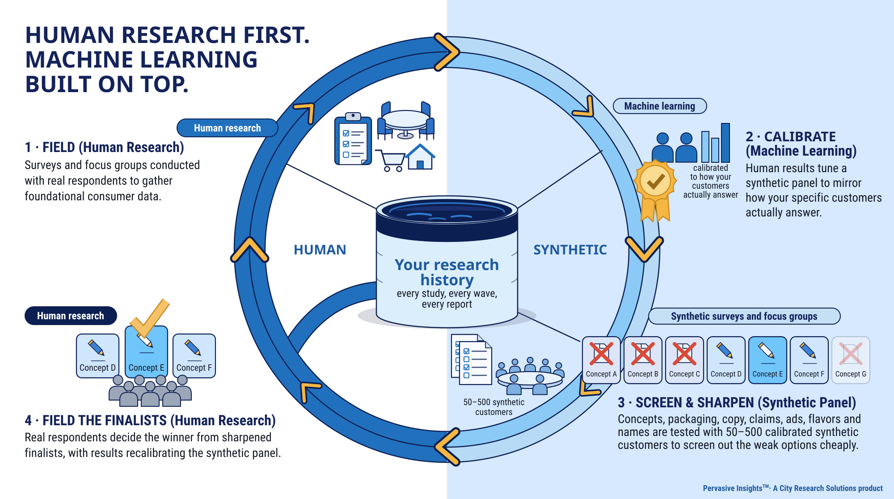

Pervasive Insights™ · The AI suite of City Research Solutions
A private portal built on the research you have already commissioned. Search your reports and query your raw data. Field surveys, focus groups and one-on-one interviews with calibrated synthetic panelists drawn from your own customers. Watch your competitive market month by month. Every answer cites its source, and every calibration is on the report card.
Pervasive Insights is a synthetic research panel built on a client's own human research: a searchable library of every study the client has run, and synthetic respondents calibrated to how that client's real customers answered, with the error reported topic by topic. It is a City Research Solutions product. City Research has run consumer research since 1979.

Human research first. Machine learning built on top. Every loop makes the next study count for more.
Why it starts with human research
Most synthetic-consumer tools generate respondents from a demographic profile, with no evidence that they answer the way your actual customers do. Pervasive Insights™ is built the other way round. Every tool in the portal starts from research you have actually fielded: your report decks, your raw datasets, your customers' real answers. The synthetic panelists are calibrated to those answers, the calibration error is published topic area by topic area, and where you have asked the question before, the human result sits right beside the synthetic one.
It does not replace fielding. It screens the ideas that deserve a real study, answers the questions that come up between waves, and keeps every study you have ever paid for in play.
Generated personas
Built from demographic filters alone. No customer data, and no evidence of how closely they track real respondents.
Data-described personas
Built from web analytics or CRM records. They know who your customers are, but their answers are still guesses.
Calibrated synthetic panelists
Built from your fielded research and checked against it, topic area by topic area, segment by segment, on a report card you can open any time.
Pervasive Insights™ is the third kind. Machine learning is the method; your research is the material.
What's in the portal
Your team opens the portal, types a research question, and the portal decides whether the answer is in your library, in your data, or needs the synthetic panel. Or they go straight to the tool they want.
Research Stack
Not a slide search. Your report decks and the full, structured datasets behind them, held in one corpus. Ask a question in plain language and the agent works out what you are looking for, reads across every study at once, and comes back with a single cited answer. Then ask the follow-up: cut it by age, by income, by wave.
The Library
Library search
Search your past reports, slide deliverables and PowerPoint decks. AI-synthesized answers with citations back to the original slides.
The Data
Data synthesis
Query the raw research datasets directly. One question runs across every matching dataset in your corpus, three waves of a tracker at once, and the answer is synthesized into one finding with the table or chart.
Synthetic customers
Build a panel from your segments, then survey it, sit it around a table, or interview one panelist at a time. Your own human data is layered in: where you have asked the same or a similar question of real people, the result comes back side by side with the human answer, cell by cell.
Surveys
Field a survey to 50 to 500 calibrated synthetic panelists.
Focus groups
Run moderated focus group discussions with synthetic panelists from any segment.
One-on-ones
Interview a single panelist in depth about their category behavior.
Deliverables
Every answer in the portal exports to Word with the synthesis, the sources and Pervasive Insights™ branding, and any result can be sent to a slide presentation. The rest of the suite downloads too:
Under the hood
The report card shows how closely the synthetic panel matches your real customer data on each of 19 marketing topic areas, for each of your segments, in percentage points. The Constellation shows what has been calibrated, what is inferred from a related topic area, and what is not yet calibrated. Nothing is hidden. See the report card See the report card →rarr; See the Constellation →
Alongside the portal
The portal answers from what your customers have told us. A Competitive Intelligence program answers from what the market is doing: what competitors charge, where they are stocked, what they launched, and what people are saying about them, collected every month by automated sweeps and social listening, and confirmed by a human purchase diary.
It is run by City Research as a program, not a portal tool, and its outputs land in the same place your research does: every sweep and every listening report is indexed into your Research Stack as a dataset, so the portal can put a shelf-price question next to a customer-perception question and answer both.
Competitive IntelligenceThree signals, three speeds
Where two of them disagree is usually the more useful finding.
How it fits
The suite does not stand apart from our research services. It sits between waves and makes each one count for more.
A survey, a set of groups, a tracker wave or an in-home test, run the way we have run them for decades.
Report decks and datasets go into your Research Stack. The synthetic panelists are calibrated to the new results and the report card updates.
Concepts, packaging, copy, claims, ads, flavors and names are tested in synthetic surveys and focus groups. Weak options are screened out; survivors are sharpened.
Real respondents decide the winner. The answer goes back into the Research Stack, and the next round starts smarter.
What we claim, and what we don't
We test the panel the way a research firm tests anything: apples to apples. The same questions go to real respondents and to the calibrated panel, and the Calibration Report Card shows the gap on every cell, topic area by topic area, segment by segment, across all 19 marketing topic areas. Rows that are not yet calibrated say so.
Where you have tested, you get your exact human results. Where you have not, you get a calibrated read that respects everything you have tested. Where something is genuinely new, the panel flags it low-confidence and points to a real test.
Average distribution error on calibration fit, across all 19 marketing topic areas; 92% of 95 cells within 5 points. Blind holdout, the prediction number, is a median miss of about 6.8 points with 42% of cells within 5. For scale: when a real survey is split randomly in half, the two halves agree within 5 points on about 85% of answers (58 consumer studies, 41,340 answer pairs). No synthetic method can beat a human study against itself, and Pervasive Insights reports both numbers on the same report card.
Calibrated synthetic panelists per client, drawn to match the actual buyer population and its segments
Of real human respondent experience across thousands of research engagements, behind every calibration
Built on private infrastructure owned and operated by CRS. Your data never touches a third-party server.
Common questions
It is machine learning applied to research you have commissioned, run by a research firm on infrastructure we own. We do not sell a chatbot, and we do not invent respondents. We would rather you think of Pervasive Insights™ as a research methodology than as software.
You own it. Your portal is private to your company and runs on private infrastructure owned and operated by CRS; your data never touches a third-party server. Your studies calibrate your panel and nobody else's.
No, and we will tell any prospect the same. The portal decides what deserves fielding, answers the questions that come up between waves, and keeps every study you have ever paid for in use. Final decisions still go to real respondents, and every new wave tightens the calibration.
The result tells you. A survey result carries its calibration state: measured for that topic area, or inferred from a related one with no human benchmark attached. The report card shows which topic areas are not yet calibrated. When something is genuinely new, the panel flags it low-confidence and points to a real test.
The portal works best on research we have fielded with you, and most clients meet it at the end of a readout. If you have a research history with another firm, we can index it; if you have none, we start with a study. Either way, the first conversation is a 30-minute walkthrough.
Everything in the suite is built on studies fielded by City Research Solutions. Explore the research services behind it.
A 30-minute walkthrough of a working portal, in your category, with generic sample data. No proposal, no slide deck.